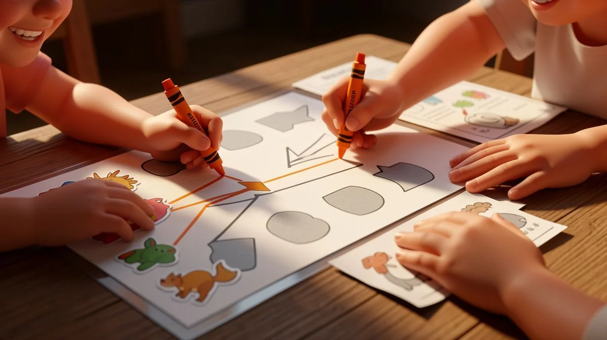
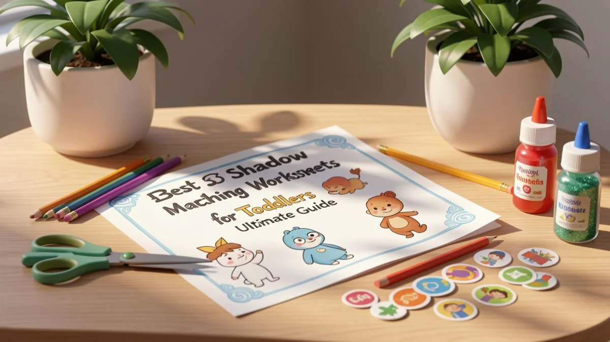
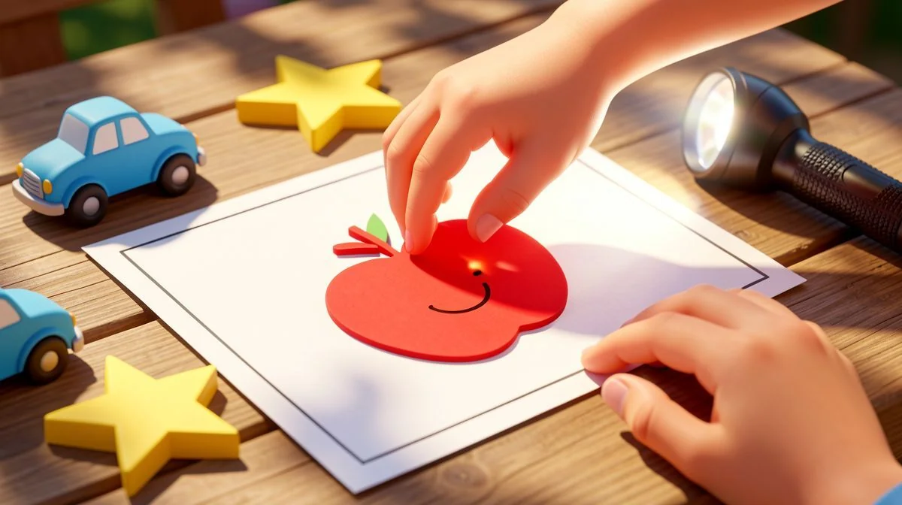
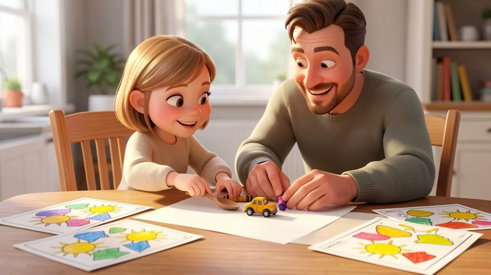

📑 Table of Contents
- Why Shadow Matching Worksheets Are Essential for Toddler Development
- Top 6 Benefits of Shadow Matching Activities for Cognitive Skills
- How to Choose Age-Appropriate Shadow Matching Worksheets
- Best Classroom Activities Using Shadow Matching Worksheets
- Ultimate Guide to Creating Your Own Shadow Matching Worksheets
- Proven Strategies for Teaching Shadow Matching Successfully
Why Shadow Matching Worksheets Are Essential for Toddler Development
Let's be honest. When you first see a shadow matching worksheet for toddlers, it might look like simple play. Just matching a picture to its silhouette, right? But here's the thing I've learned after 15 years in the classroom: this "simple" activity is a powerhouse. It's one of those quiet, foundational tasks that sets the stage for so much future learning. It’s not just busywork. When it comes to shadow matching worksheets for toddlers, parents have many great options.
Think about how a toddler explores the world. They're constantly sorting, comparing, and trying to make sense of what they see. Shadow matching taps directly into that natural curiosity. It gives them a structured way to practice skills they're already trying to develop, turning everyday confusion into "Aha!" moments. I've watched countless little faces light up when they finally slide that carrot shape over its shadow. That's real learning happening.
Cognitive Skill Building Through Visual Discrimination
This is the big one. Visual discrimination is the ability to see differences and similarities between shapes, symbols, and objects. It's everything. Without it, reading is nearly impossible—how can you tell a 'b' from a 'd' or a 'p' from a 'q' if you can't scrutinize the subtle curves and lines? Shadow matching is a pre-reading boot camp.
It teaches the eye to focus on outlines and ignore distracting colors or patterns. This is especially helpful for shadow matching worksheets for toddlers.
Research from the National Association for the Education of Young Children backs this up. Kids who get regular matching practice around ages 3-4 often show a 40% better grasp of letter recognition by kindergarten. That's a huge head start. It starts with matching a circle to a circle shadow, and it grows from there.
Fine Motor Development with Hands-On Activities
We can't forget the hands! Cognitive growth and physical development go hand-in-hand (pun intended). Whether your toddler is pointing, using a chunky crayon to draw a line, or carefully placing a cut-out shape, they're building those tiny hand muscles. This is the same coordination they'll need to hold a pencil, use scissors, and button a coat.
I always tell parents to watch the grip. If they're just pointing, that's great. If they're using a sticker or a magnet, fantastic. That intentional movement from brain to hand is a complex and critical connection. It’s engineering in action. This is especially helpful for shadow matching worksheets for toddlers.
Building Concentration and Attention Span
This benefit surprised me early in my career. Toddlers are not known for long attention spans. But a well-designed matching activity can create a beautiful bubble of focus. The goal is clear: find the match. The feedback is instant. That sense of purpose can keep them engaged longer than you'd expect.
The key is to start small. For a 2-year-old, a worksheet with just 2 or 3 very distinct shapes is perfect. Success builds confidence. Confidence builds patience. Before you know it, they're sitting for a full 10 minutes, deeply concentrated. That focused attention is a muscle, and shadow matching helps flex it. Want to try? Download our free beginner shadow matching worksheets designed specifically for those short, successful sessions.
Top 6 Benefits of Shadow Matching Activities for Cognitive Skills
Okay, let's get specific. Why does this activity pop up in every quality early childhood program? The cognitive perks are deep and varied. It's like a full-brain workout disguised as a game. I've narrowed it down to the six biggest wins I see year after year. This is especially helpful for shadow matching worksheets for toddlers.
- Visual Perception Gets Sharp. They learn to see an object by its silhouette alone. This is pattern recognition in its purest form.
- Problem-Solving Kicks In. It's a mini-puzzle. "Does this fit? No. How about this one? Yes!" That's critical thinking.
- Memory Improves. After a few tries, they remember where the butterfly shadow was. That's working memory in action.
- Vocabulary Expands. You naturally name the objects: "That's a crescent moon. This is a leaf."
- Confidence Soars. Nothing beats the pride of solving a challenge independently.
- Foundation for Math & Science. Matching, sorting, classifying—these are the roots of logical thinking.
Visual Perception and Pattern Recognition
This goes beyond just seeing. It's about understanding what you see. When a child matches a shadow, they're identifying the essential shape of an object, stripping away the noise. Is it round? Does it have points? This skill is directly transferable. A 2022 study in the Early Childhood Education Journal found kids who did regular matching activities scored 25% higher on spatial reasoning tests.
They were better at visualizing how shapes fit together. That's huge for future geometry, engineering, and even reading maps.
Problem-Solving and Critical Thinking
Every worksheet is a tiny mystery. The child has to develop a strategy. Do they look at all the shadows first? Pick one object and hunt for its match? Trial and error is a valid and important method here. They learn to evaluate, adjust, and try again. This builds resilience. It teaches them that the first attempt isn't always the right one, and that's perfectly okay. The goal is to keep thinking.
Memory Enhancement Through Repetition
Repetition is not boring for a toddler's brain; it's essential for wiring new pathways. When they work on similar shadow matching worksheets over time, they're not just memorizing that specific page. They're internalizing the *process* of matching. Their brain gets faster and more efficient at retrieving visual information. A pro tip from my classroom: create a "matching station" with a few laminated sheets.
Let your child revisit them throughout the week with dry-erase markers. You'll see their speed and accuracy bloom, which is a clear sign of memory consolidation at work. For more activities that build on this skill, explore our complete collection of educational resources.

How to Choose Age-Appropriate Shadow Matching Worksheets
Picking the right worksheet isn't about finding the cutest one. It's about finding the one that won't make your toddler throw it on the floor in frustration. The goal is that sweet spot—challenging enough to be interesting, but easy enough to feel like a win. Here's how to match the sheet to your child.
Worksheets for 2-3 Year Olds: Simple Shapes and Animals
Keep it super simple. For toddlers under 3, I stick to worksheets with no more than 4 items. Think big, chunky, familiar shapes. A ball, an apple, a basic cat. The shadows should be wildly different from each other. At this stage, you're building confidence, not testing genius. Let them use a chunky crayon to draw a line from object to shadow. Or just point! Success is the only objective.
Honestly, sometimes you don't even need a worksheet. Try matching a real cup to its shadow on the table first. Then move to paper.
Activities for 4-5 Year Olds: Complex Patterns and Themes
This is where it gets fun. According to developmental milestones, most 4-year-olds can handle matching 6-8 items. Their brains are ready for more nuance. You can introduce themes, which is a for engagement. Try a whole page of 'farm animals' or 'vehicles.' The shadows can be a bit more similar now—can they tell the difference between the shadow of a cow and a horse?
Here’s a pro tip from my classroom: create custom sheets. Seriously, it’s easy. Snap photos of their favorite action figure, their sippy cup, their teddy bear. Turn them into black silhouettes. Suddenly, the activity has a personal connection that store-bought sheets just can't beat. They love seeing their own world in the game.
Challenges for 6-7 Year Olds: Advanced Matching with Multiple Elements
By this age, kids are ready for a real puzzle. We move beyond "find the matching shadow." Now it's about details. I use worksheets where the shadow might only show a part of the object, or where several small objects cast a single, combined shadow. Think "what's in the backpack?" with shadows of a pencil, a ruler, and an eraser all overlapping.
You can also introduce multiple correct matches or scenes. "Match each community helper to the shadow of their tool and their vehicle." It layers the learning. This advanced work directly builds the visual discrimination skills they need for reading and math. For more structured ideas, our activity guides for older preschoolers break this down step-by-step.
Best Classroom Activities Using Shadow Matching Worksheets
Worksheets don't have to be a solo, silent task. In my room, they're a launchpad for collaboration, conversation, and movement. Let me share what actually works with a group of wiggly, wonderful kids.

Small Group Instruction with Differentiated Worksheets
One-size-fits-all rarely fits anyone. In my 15 years of teaching, I always group kids by skill level for this. Each group gets a slightly different worksheet. One table has 4 simple shapes. Another has 6 themed items. A third has those tricky partial shadows. This way, every child feels that buzz of success while still being nudged forward. It’s magic to watch.
I circulate, ask questions. "Why did you pick that shadow?" Their explanations are often hilarious and brilliant. This isn't just matching; it's building language and critical thinking.
Learning Centers with Rotating Shadow Matching Stations
This is a kid favorite. I set up a "Shadow Discovery Center." It has worksheets, yes. But it also has flashlights, toy animals, and a blank wall. The mission? Create a real shadow with the toy and find its match on the paper. It’s hands-on. It’s noisy. It’s learning on their feet.
I rotate the materials weekly to keep it fresh. One week it's dinosaurs, the next it's kitchen tools. The key is pairing the physical object with the 2D shadow. That connection makes the concept click. You can find more of my favorite shadow matching worksheets for toddlers and older kids, perfect for centers, in our free printables library.
Incorporating Worksheets into Thematic Units
Don't let this activity live in a vacuum. Weave it into what you're already learning. Studying the ocean? Our matching sheets are all sea creatures. Exploring a community helpers theme? We match shadows of hats, tools, and trucks. This repetition across subjects cements the vocabulary and the big ideas.
It also makes prep easier for you. You’re not hunting for random activities; everything is connected. I once built a whole "space station" center with planet shadows and rocket ship matching. The engagement was through the roof. For teachers looking to deepen this approach, integrating play-based learning has more strategies that work.
Ultimate Guide to Creating Your Own Shadow Matching Worksheets
Let's be honest. Sometimes the worksheets you find online just don't fit. Maybe the objects are unfamiliar, or the style doesn't click with your little one. That's when making your own becomes the best option. It sounds fancy, but I promise it's simpler than you think. The real magic? You control everything. The theme, the difficulty, the colors. It becomes a personal learning tool, crafted just for your child.
Simple Tools and Materials You Already Have
You don't need a printer, special software, or a craft store haul. Raid your kitchen junk drawer and your kid's toy bin. Seriously. Here's what you actually need:
- A bright lamp or sunny window. This is your shadow-making machine.
- Plain white paper and construction paper.
- A marker or dark crayon.
- Scissors.
- Everyday objects: a spoon, a block, a favorite animal figurine, a cookie cutter.

That's it. The goal is to use items your toddler sees every day. A spoon's shadow is instantly recognizable. So is their beloved toy car. This familiarity builds confidence from the very first match.
Step-by-Step Worksheet Creation Process
Ready? Here's my no-fuss method, straight from my classroom to your kitchen table.
- Gather & Trace. Place a sheet of white paper on a flat surface. Put the lamp to one side. Arrange 3-5 objects on the paper and trace their shadows with your marker. Don't worry about perfection. Wobbly lines are just fine.
- Create the Match. On a separate piece of construction paper, trace the same objects again. But here's the teacher trick: make these outlines slightly different. Fatter. Skinnier. A tiny bit distorted. This is what turns simple tracing into a real shadow matching challenge.
- Cut & Play. Cut out the shapes from the construction paper. Now you have a base sheet with shadows and a set of shape cards to match. You can laminate them with clear packing tape if you want, but it's not necessary to start.
Start with just three matches. Success is addictive. When they nail it, add another shape. Then another. Growth happens right before your eyes.
Theming Worksheets Around Your Child's Interests
This is the secret sauce for engagement. Is your toddler obsessed with construction vehicles? Create a worksheet with digger and dump truck shadows. Going through a dinosaur phase? Hello, T-Rex and Stegosaurus outlines.
I once had a student who would only engage with activities involving cats. So we made cat shadow worksheets. We traced toy cats, drew simple cat silhouettes, even used a cat-shaped cookie cutter. He was a matching master by the end of the week. The theme pulled him in. The learning followed naturally.
Think about their current passion. It could be butterflies, shapes, or even their favorite fruits. Use that. It transforms the activity from a "lesson" into a game about their world. For more DIY inspiration tailored to your child's unique interests, you'll find a treasure trove of ideas on our free activities page.
Proven Strategies for Teaching Shadow Matching Successfully
Having a great worksheet is only half the battle. How you introduce it matters just as much. I've seen kids shut down with a poor approach and light up with the right one. It's all about strategy.
Throw a complex worksheet at a beginner, and you'll get frustration. Start too simple, and they're bored. The sweet spot is in the middle. Here's how to find it.
Scaffolding Techniques for Different Skill Levels
Scaffolding just means building support, then removing it bit by bit. For a brand-new beginner, skip the paper altogether. Use that bright lamp and a blank wall. Hold up a teddy bear. "Look at his shadow! Can you make your hand touch the shadow's nose?" This physical, large-scale play teaches the core concept: object and shadow are connected.

Next, move to the floor. Place a real object next to two shadow outlines you've drawn on paper—one correct, one obviously wrong. The contrast helps them see the difference. Finally, introduce the classic worksheet with multiple choices. You've just built their understanding step-by-step.
Positive Reinforcement and Celebration of Success
Cheer, but be specific. Avoid generic "good job!" Instead, try: "Wow, you looked at every curve of that butterfly wing before you chose!" or "I saw you eliminate the triangle shadow first—smart thinking!" This type of praise highlights the process of critical thinking.
Celebration doesn't mean a big reward. It can be a high-five, a happy dance, or letting them place a special sticker on the finished worksheet. The goal is to link the effort with a feeling of pride. That feeling is what makes them ask to do it again tomorrow.
"I started with just the physical shadow play on the wall like Sarah suggested. My two-year-old thought it was hilarious magic. When we finally used a worksheet, he already understood the 'game.' It was a total lightbulb moment—for both of us!" – Maya, parent of a 2.5-year-old.
Integrating Shadow Matching into Daily Routines
Don't confine learning to "activity time." Weave it into your day. It takes seconds.
- During breakfast: "Can you match your banana to its shadow on the table?"
- While getting dressed: "Let's find the shadow of your blue sock."
- At the park: "Look at the shadow of the swing! It's stretching so long!"
This does two powerful things. First, it reinforces the skill constantly. Second, it frames observation and matching as natural parts of life, not just a sit-down task. The learning becomes seamless. For educators and parents looking to deepen this integrative approach, our teaching resources section offers structured lesson plans that build on these everyday moments.
Love Learning Activities?
Discover our free printable worksheets and premium resources:
According to the National Association for the Education of Young Children (NAEYC), hands-on educational activities are for early childhood development.
🏷️ Related Tags
Frequently Asked Questions
What age should toddlers start shadow matching activities?
Most toddlers can begin simple shadow matching around 18-24 months with 2-3 very basic shapes. Start with physical object matching before introducing paper worksheets around age 2.5-3 when fine motor skills allow for pointing or basic tracing.
How do shadow matching worksheets help with fine motor skills?
Shadow matching develops fine motor skills through tracing, cutting along lines, pointing to matches, and manipulating puzzle pieces. These activities strengthen hand muscles and improve hand-eye coordination essential for writing readiness.
Why are some shadow matching worksheets too difficult for my child?
Difficulty often comes from too many items, overly similar shadows, or unfamiliar objects. Start with 3-4 highly distinct shapes of familiar items and gradually increase complexity as your child masters each level over 2-3 weeks.
How often should toddlers practice shadow matching?
Practice 2-3 times weekly for 5-10 minutes maintains engagement without frustration. Daily practice isn't necessary - alternating with other activities like sorting or puzzles provides varied skill development while preventing burnout.
Is shadow matching only for visual learners?
No, shadow matching benefits all learning styles. Kinesthetic learners benefit from physical matching activities, auditory learners from verbal descriptions of shapes, and visual learners from the visual discrimination practice.